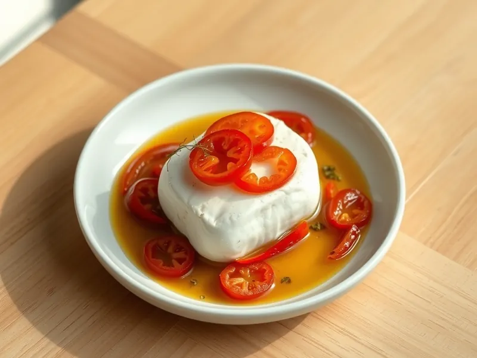

Бугиурди - фета, запечённая с помидорами и перцем
Греческая брынза, запечённая в оливковом масле с помидорами, перцем и орегано
25 мин2 порц.387 ккал на порциюБ 20 · Ж 30 · У 7Средиземноморская кухня
Открыть в приложении: порции, таймеры, список покупок
Продукты на 2 порц.
- Брынза / фета200 г
- Помидоры2 шт
- Перец болгарский0,5 шт
- Оливковое масло2 ст. л.
- Сушёные травы1 ч. л.
- Острый перец молотый1 щеп.
- Перец чили по желанию1 шт
Как готовить
- Разогрейте духовку до 200 °C (сильный жар). Нарежьте помидоры тонкими кружочками, перец - тонкими полосками, чили - колечками.
- Выложите половину помидоров в небольшую форму или на лист фольги, сверху положите брусок феты целиком.
- Накройте фету оставшимися помидорами, перцем и чили, посыпьте сушёными травами и хлопьями перца, полейте оливковым маслом.
- Если используете фольгу, плотно заверните края конвертом.
- Запекайте 15-18 минут, пока фета не станет мягкой и кремовой, а помидоры не пустят сок. Ешьте сразу, пока сыр горячий.
Совет. Берите плотную брынзу или фету бруском: рассыпчатая растекается в духовке и превращается в соус.